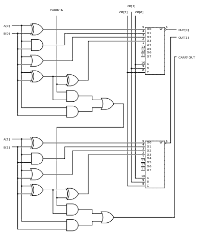

Muchos otros circuitos pueden contener en el interior una unidad aritmético lógica:
unidades de procesamiento gráfico como las que están en las GPU modernas, FPU como
el viejo coprocesador matemático 80387, y procesadores digitales de señales como los que
se encuentran en tarjetas de sonido, lectoras de CD y los televisores de alta definición.
Todos estos tienen en su interior varias ALU potentes y complejas.
`
En la imagen se detalla una ALU de 2 bits con dos entradas (operandos) llamadas A y B:
A[0] y B[0] corresponden al bit menos significativo y A[1] y B[1] corresponden al bit
más significativo.
Cada bit de la ALU se procesa de manera idéntica, con la excepción del
direccionamiento del bit del acarreo. El manejo de este bit es explicado más adelante.
Las entradas A y B van hacia las cuatro puertas de la derecha, de arriba abajo, XOR,
AND, OR. Las tres primeras puertas realizan las operaciones XOR, AND, y OR sobre los
datos A y B. La última puerta XOR es la puerta inicial de un sumador completo.
El paso final de las operaciones sobre cada bit es la multiplexación de los
datos. La entrada OP de 3 bits, OP[0], OP[1] y OP[2] (desde la unidad de control)
determina cual de las funciones se van a realizar:
Claramente se ve que las otras cuatro entradas del multiplexor están
libres para otras operaciones (sustracción, multiplicación,
división, NOT A, NOT B, etc). Aunque OP[2] actualmente no es usada
en este montaje (a pesar de estar incluida y conectada), ésta sería
usada en el momento de realizar otras operaciones además de las 4
operaciones listadas arriba.
Los datos de acarreo de entrada y acarreo de salida, llamados flags
(banderas), son típicamente conectados a algún tipo de registro de estado.
